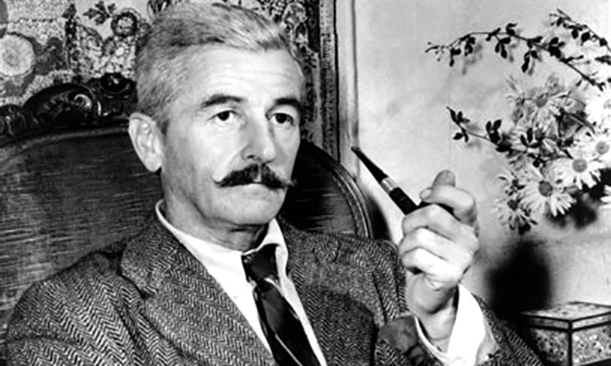

.William Faulkner [1897-1962].
Đã 100 năm lẻ một kể từ ngày sinh của William Faulkner - một khuôn mặt lớn của thế kỷ văn học hiện đại - vì sao dấu ấn của ông lại đậm đến thế?
Giá có được cả một ngày, và một nơi riêng tư để đọc Faulkner [1897-1962]. Tìm được một cuốn sách bỏ túi đã cũ, cuốn Thánh Địa(Sanctuary) và ngay từ dòng đầu tiên, người ta nghe được từ trong bóng tối lờ mờ một tiếng nói thầm, bất tận, không mệt mỏi. Nó lôi cuốn, nó trùm lên chúng ta tất cả; ánh nắng của mùa hạ, những tầng cây đơm hoa, những tiếng xì xào trong màn đêm mơ hồ lấp lánh, những tia nắng mặt trời, giấc ngủ chìm sâu của ý thức. Và rồi thật đơn giản, một con mắt ngắm nhìn một người đàn bà – một con mắt khổng lồ mở to.
Một con đường, những bụi cây, làn gió nhẹ, những cặp môi hé mở, cái thời khắc ngàn đời chờ đợi của những ham muốn nhục dục. Khuôn mặt, chiếc quần cộc, những chiếc tất dài, cổ họng, tất cả đều phập phồng như chui ra từ một không gian ướt át và chói lòa.
Mỗi độc giả của Faulkner đều thấy được nâng lên bởi ngọn triều câu chữ, sự siêu phàm của nó, sự lấp lánh của nó, cái mùi hương đậm đặc của đêm nồng. Như thể có một chiếc kính phóng đại soi lên da thịt của thế giới đang đê mê trong giấc ngủ chiều. Thật vậy, người ta có thể kể cho bạn về huyền thoại Faulkner. Ông viết vào ban đêm trong căn phòng nhỏ tại một trung tâm điện lực cho đến kiệt sức, không hề xóa bỏ. Mọi người đều biết sự cưỡng dâm của bông hoa ngô trong Thánh Địa. Người đọc nhớ đến cô Reba, cũng trong cuốn đó, chăm sóc những cô bé của mình, rõ ràng là những kẻ lẳng lơ. Không giống như trong đồ sứ châu Âu, Faulkner chỉ ra những kiểu người quỳ gối, đặt bàn tay lên những phụ nữ luống tuổi và rú lên vì thích thú. Ông chỉ ra những kẻ ngu ngốc, đần độn, những kẻ ma cô, những kẻ giết người trong tương lai, những quan tòa tham nhũng, những luật sư giả cầy, những phụ nữ chín nẫu ra tốc váy lên trước những người da đen…
Người ta đếm được hơn 10 ngàn nhân vật trong tác phẩm ông. Như vậy, họ tin mình đang đọc Balzac. Đâu phải! Người ta đang ngập ngụa trong vũng bùn của chất libido của con người. Những chiếc bóng đi ra từ bóng tối, run rẩy vì ham muốn. Những phụ nữ trẻ, chiếc áo bờ lu mở toang, khêu gợi những gã đàn ông làm họ sáng mắt lên để lom lom nhìn! Các cô gái cũng thế! Trong tác phẩm của Faulkner không bao giờ người ta cúi nhìn xuống. Người ta chiếm lấy kẻ khác, quật ngã họ, vắt kiệt họ, nhào nặn họ, cho đến chết. Không hề có công lý công đạo, không thiên thần á thánh, không những vị cứu tinh, mà trong một kho trại, trong mùi hăng nồng của ngô héo, người ta đào bới nhau, cho đến mức chém giết, tàn sát. Ở bên ngoài, một con chim khẽ hót. Bóng tối dưới rừng là chất cuồng nhiệt và bất động đánh lừa cặp mắt nhìn.
Sự lớn lao của Faulkner không nằm trong cái tự mệnh danh là thanh giáo được hiểu về tội lỗi, hay trong chất địa phương miền Nam nước Mỹ, trong chất quý tộc của nó, hay trong sự hoài nhớ về cuộc nội chiến, mà đúng hơn là trong cách tẩy xóa những hàng rào đạo đức mà con người tự đặt ra để bớt đi niềm sợ hãi.
Sự thác loạn của việc tồn tại ở Faulkner chẳng hề có thiên đường, mà là những người da đen bị treo cổ, đầu trùm kín chiếc mũ đen chỉ hở hai con mắt, chết mà không biết lý do; những cô gái đầu óc còn ngây ngô ngơ ngác, nửa kín nửa hở, trong một túp lều mà lũ người say rượu chiếm cứ, những thân thể tìm kiếm những thân thể khác và hoàn toàn câm điếc trước những thuyết giáo về đạo đức, trước mọi lý lẽ mọi đạo đức hiện hành. Sự cuồng nhiệt ở trong trạng thái thuần túy của nó…
Ở đấy, nơi mà châu Âu cũ trong những năm 30 được tinh luyện với Marcel Proust và tạo ra một trong những hiệu kim hoàn đẹp đẽ nhất về tâm lý học, thì Faulkner có mặt với chiếc máy ủi và nói rằng tình dục và cái chết cuỗm đi hết thảy. Cuộc đời không có chủ nhật, không có những niềm vui ngọt ngào, không có hậu thế, không có khiêu vũ hóa trang mà là những thân xác sờ soạng và làm nhàu nát lẫn nhau trong cái chạn gác. Ngày 10/12/1950, vào điểm cao của chiến tranh lạnh, Faulkner nhận giải Nobel văn học, nhưng mọi nỗ lực để chính thức hóa và mang lại bộ mặt khả ái cho nhà văn đã thất bại. Ông ít nói, uống như hũ chìm, vẫn là một ông trại chủ - quý tộc dữ dằn. Được mời đến các trường đại học, ông nhắc đến Kinh Thánh nhưng nói thêm rằng ông “vẫn là một trại chủ Mỹ”. Quả thực nhà văn vẫn hoang dã, bất chấp, cô độc, bị ám ảnh, rất khả nghi về những mưu mẹo của mình. Cặp mắt con chim săn mồi của ông nhìn chằm chằm vào cuộc hoan lạc khổng lồ của nhân loại.
Nhưng đồng thời ông không phải là kẻ trơ tráo, mà ông sát đất, bò trườn, âu lo, là ông thánh Moise trong ngôn từ của mình, là kẻ hà hiếp bởi tác phẩm mình, không hề có thái độ mời mọc đặc biệt nào đối với những ai thán phục mình mà tìm cách để làm quen với điều này. Ở Pháp các trường đại học ra sức phân tích, thăm dò những tác phẩm của ông, tạo ra những ấn bản tuyệt vời, đặc biệt là Michel Grasset trong La Pléiade. Người ta khuyên bạn nên đọc cuốn này hay cuốn kia. Có những người yêu vô điều kiện Những cây cọ hoang, có những người chỉ khen ồn ào và cuồng nộ, có những người lại thích những truyện ngắn (có đến 200 truyện), lại có những người cảm thấy mình khổ sở vì không leo tới tuyệt đỉnh của Nắng tháng Tám. Với tác giả có bộ ria bàn chải, khuôn mặt dân miền Nam dầu dãi, với cái đầu kiêu ngạo, cũng có kẻ thích chất dung tục của truyện Thôn nhỏ tạo ra nhân vật Eula lầm than, bệnh tật và hoa tình kinh khủng. Xa xỉ tạo ra đàn bà… Một sự ngây thơ hoàn toàn trụy lạc…
Faulkner là viên lục sự của những con người nằm trong bóng tối, vùng vẫy trong nhục dục, tội lỗi và bùn lầy (theo cái nghĩa triết học của Jean-Paul Sartre) trong vùng tối tăm của con người, trong thuốc độc của thôi thúc, trong đáy sâu của chất libido, trong chất dầu hắc, con người cật lực trong những công việc khổ sai mà người ta gọi là cuộc sống. Faulkner, bằng cách miêu tả cái phần thấp kém của con người, đã bắt tay với một con người đáng ngờ khác là Sigmund Freud, và ông cũng nổi tiếng không kém!
Để kỷ niệm 100 năm ngày sinh của William Faulkner, Oxford, thành phố quê hương ông trù định dựng một bức tượng để tôn vinh ông. Thế nhưng quyết định này đã làm cho gia đình nhà văn phản ứng và nhiều người dân thành phố tức giận khi đào đi cây mộc lan quý giá.
Có thể chuyện này liên quan đến chứng nghiện rượu nặng của ông hay cái tính chất bâng quơ đường bệ của ông. Mà có thể cũng chính bản thân những thiên truyện, đặc biệt là những câu chuyện tối tăm về chứng bệnh tâm thần, bệnh điên và giết chóc đã làm cho dân sở tại bối rối. Nhưng dù lý do nào đi nữa thì đa phần dân cư tại thành phố quê hương ông dần dần cũng ấm lòng lên, dù muộn màng, với tài năng của ông. Người cháu của ông, Murry C “Chooky” Falkner, người ta vẫn dùng cách phát ngôn ban đầu tên của dòng họ mình, nhận xét: “Oxford không khoái ông đâu”.
Còn bây giờ thì thành phố này muốn bù đắp. Với ngày sinh nhật lần thứ 100 của nhà văn đoạt giải Nobel đang đến gần, các bậc trưởng lão của thành phố định dựng lên một tượng đài. Một bức tượng của Faulkner bằng đồng lớn hơn con người thực của nhà văn, sẽ tô điểm cho khu đất nhỏ của tòa thị sảnh. Bức tượng, đối diện với quảng trường pháp đình, có thể là ngọn đèn hiệu cho hàng ngàn tín đồ Faulkner lặn lội đến Oxford hàng năm. Nó cũng là một sự chuộc lỗi cho những ngày mà chàng văn sĩ trẻ tuổi dị hợm này bị nhạo báng là ngài bá tước “dỏm”. Nhưng cũng giống như trong cái luận đề thường lặp lại của Faulkner về tội lỗi và cứu chuộc, việc giảng hòa với những bóng ma không phải dễ dàng. Một số sự chống đối quyết liệt nhất về việc dựng tượng là của gia đình nhà văn.
Jimmy Faulkner, trông giống hệt người bác văn sĩ quá cố nói: “Ông là một con người kín đáo, và chúng tôi cũng vậy. Người ta sắp đem ông làm con mồi cho du lịch. Đấy là cái tệ hại nhất mà người ta có thể làm đối với ông”. Còn một số người tán thành việc dựng tượng thì không đồng ý với cái cách làm ăn của thành phố. Họ đặc biệt phản đối việc bí mật bứng đi cây mộc lan đường bệ để lấy chỗ dựng bức tượng. Jill Faulkner Summers, con gái nhà văn, đã gửi một lá thư cho chính quyền thành phố từ nơi ở của mình ở Virginia, viết: “Tôi kinh hoàng về chuyện cây mộc lan cũng như về bức tượng”.
Thị trưởng John Leslie, một trong những người đứng ra chủ trương việc này, đã gạt đi những lời chỉ trích. Ông ta đã trồng cây mộc lan này năm 1976 cho nên theo ông, ông có quyền ra lệnh đốn nó. Và ông còn nói là luật pháp bang Mississippi không đòi hỏi sự tán đồng của gia đình trong việc dựng tượng của một người đã khuất. “Khi một người chết đi, họ thuộc về mọi thời đại”, ông tuyên bố.
Sự trớ trêu của tình thế, với những kẻ thù lăng nhăng bám theo từ quá khứ, cũng không chừa ra giới học giả nghiên cứu Faulkner. William Ferris, giám đốc Trung tâm Văn hóa miền Nam tại đại học Mississippi ở Oxford nói: “Lời nguyền rủa của Faulkner đối với thành phố này là chúng ta buộc phải sống với những tấn kịch mà ông miêu tả”. Ferris cũng rất bối rối trước việc triệt hạ cây mộc lan đã khơi lên hành động mà nhân vật hư cấu tham lam và chuột bọ nhất của Faulkner có thể làm.
Faulkner mất năm 1962, phần lớn cuộc đời sống tại Oxford, khoảng 60 dặm về phía đông nam Memphis, bang Tennessee. Mặc dầu tổ tiên ông là những cột trụ của cộng đồng dân cư này, nhà văn thời trẻ lại vun bón cho những gì dị hợm. Thomas H.Freeland III, luật sư của Oxford nói: “Ông là con người không bình thường. Hầu hết những tài năng đều như thế”. Những tính cách đặc biệt của ông đã trở thành những truyền thuyết văn học: với bộ quần áo lính từ thời Thế chiến I của sĩ quan Anh ông đi dạo khắp thành phố, sà vào những quán rượu whisky hay ngồi trần truồng dưới bóng một cây sồi. Ngài thị trưởng Leslie thừa nhận rằng Faulkner có những ác cảm nào đó đối với Oxford, và cũng không thực sự yêu thích nhiều người dân ở đây. Những trại chủ bẩn thỉu của vùng bắc Mississippi, những nhà quý tộc, và bọn hạ lưu, ngược lại, đã cung cấp thức ăn cho trí tưởng tượng khác thường của nhà văn. Tập trung vào cái mà ông gọi là “con tem bưu điện bé nhỏ về mảnh đất quê hương” của ông, nhà văn đã tạo ra Quận Yoknapatawpha kỳ bí và biến nó thành một thế giới vi mô vủa miền nam Mỹ và của nhân loại. Văn của ông có thể rất khó, với những thiên truyện như Light in August (Nắng tháng Tám) và The Sound and the Furry(Ồn ào và cuồng nộ), các nhà phê bình đã xếp ông là nhà văn lớn nhất nước Mỹ.
Để dựng tượng Faulkner, chính quyền thành phố bỏ ra 25.000 USD và quyên góp khoảng chừng ấy nữa. Nhà điêu khắc khả kính của thành phố, William Beckwith, được giao việc tạo ra một bức tượng đáng kính và đường bệ về con người này trong tư thế trầm ngâm và trang nhã. Oxford với mười ngàn cư dân là một thành phố cao đẳng mang dáng dấp một chiếc nôi của văn học. Hollywood đã từng quay phim ở đây từ năm 1949, kịch bản dựa trên một tác phẩm của Faulkner Intruder in the Dust (Kẻ xông vào bụi). Rowan Oak, ngôi nhà của Faulkner, hàng năm thu hút khoảng 11.000 khách viếng thăm. Nhưng Oxford đã phản đối việc khai thác di sản Faulkner kiểu Memphis đối với ông vua nhạc rock Elvis Presley.
Thế nhưng việc đốn ngã cây mộc lan cao bằng bốn tầng nhà đã làm nhiều kẻ bất bình. Ông Ferris thốt lên: “Chỉ có ma ám mới đốn đi cây mộc lan đẹp như thế”. Những người phản đối đặt vòng hoa tang lên gốc cây và trích đọc lời một truyện ngắn của Faulkner than vãn về “những khu rừng tàn tạ”. Trong khi đó, sự chống đối của gia đình nhà văn về cuộc dựng tượng xem ra lại đổ thêm dầu vào lửa. Jill, con gái nhà văn, viết cho Jimmy Faulkner: “Anh hãy đến gặp thị trưởng, Hội đồng trưởng lão và những người cần thiết khác và bảo họ rằng tôi không muốn một bức tượng của cha tôi được làm ra và trưng bày trước công chúng… Hãy thuyết phục họ tôn trọng cái nguyện vọng mà cha tôi thường nhắc đi nhắc lại là muốn được sống kín đáo”. Theo những người thân của nhà văn, còn có những lý do khác ngoài việc “sống riêng tư”. Họ sợ nhà điêu khắc tạo ra một hình ảnh bôi bác về nhà văn với chiếc quần lụng thụng và tả tơi, hay quy mô của nó: Cao hơn 2m đặt trên chiếc bệ khoảng 1m2, vì theo Beckwith nếu tượng chỉ to bằng người thật (Faulkner cao khoảng 1m64) thì sẽ lọt thỏm và lùn tịt trong khung cảnh ở đây.
Với kỷ niệm 100 năm ngày sinh của Faulkner đang đến gần (25.9) sự giằng co giữa hai phía tán thành và phản đối xem ra làm cho việc dự định không thành. Cuối cùng luật sư Tom Freeland tuyên bố phải tìm cho ra một sự thỏa hiệp về việc lập tượng đài kỷ niệm nhà văn. McCarty, ông già 80 tuổi nói một cách sốt sắng: “Tôi quan tâm đến việc đặt Faulkner ở nơi ông cần phải có, và làm mọi việc để được như thế”. Còn gia đình nhà văn thì nói cuối cùng họ nhân nhượng việc đúc tượng và hài lòng với nhà tạc tượng Beckwith, nhưng họ vẫn không vui. Còn Chooky Faulkner, khi được hỏi sẽ làm gì khi bức tượng dựng lên, ông ta đáp: “Chẳng nhẽ lại cho một cú bộc phá ư?”. Còn đối với cây mộc lan, nhiều người vẫn còn nuối tiếc. Ông Feris nói: “Việc đốn cây này sẽ ám ảnh thành phố trong nhiều năm nữa. Giống như Faulkner đã nói: “Quá khứ không hề chết. Nó không chỉ là quá khứ”. Quả vậy, sự “cuồng nộ” của thiên tuyệt tác của nhà văn đang nắm lấy thành phố này.